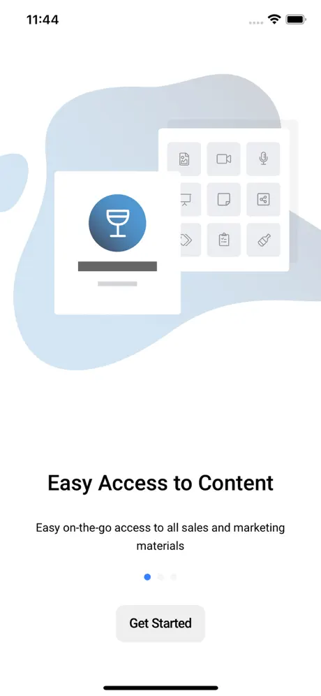
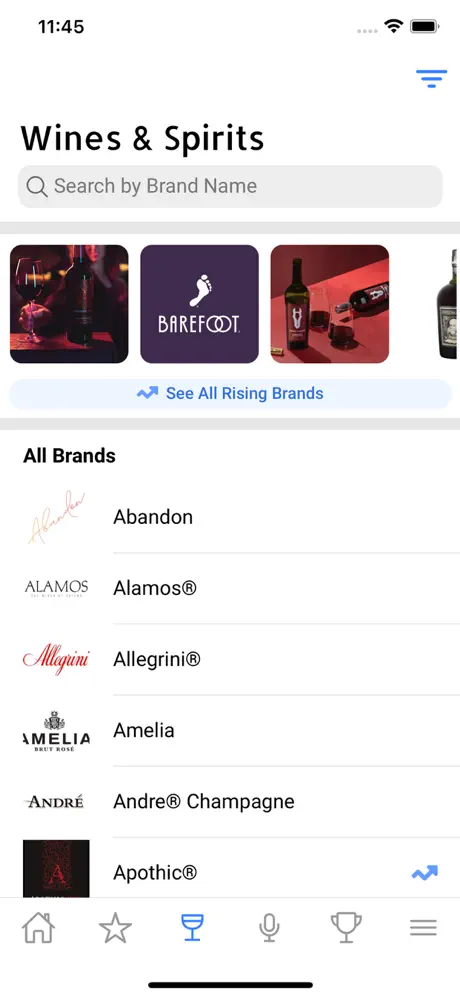

Field sales enablement at enterprise scale, in Xamarin.iOS
Gallo Gateway puts E. & J. Gallo Winery's entire sales, marketing and training library in a rep's hand — one-sheets, presentations, point-of-sale visuals, brand standards, podcasts and training material. The reps using it are standing in a retailer's back room or a restaurant basement, and the connectivity there is exactly as good as you would expect.
On source code: Gallo Gateway is an E. & J. Gallo Winery product, delivered while I was at {{co_a}}. Client IP, no public repository. The architecture description below is my own.
Context & Scope
This was my early-career era, and it was the right kind of hard: a long-lived enterprise iOS application, already several major versions in, serving a large field sales organisation across multiple markets — delivered from a small, resource-constrained startup where I was one of very few people touching mobile. There was no luxury of a greenfield decision. The job was to extend, modernise and keep stable an app that real revenue-generating people used every day.
Over my time on it the product went through a full visual and structural redesign, gained international markets and localisation, moved its authentication to Microsoft Azure, took on iBeacon-driven in-market experiences, and steadily upgraded a large surface of native plugin dependencies. Each of those is an ordinary-sounding line item that is genuinely difficult on a shipped enterprise app with users who cannot afford a bad release.
The interesting constraints
- The library is large and the network is not reliable. A rep about to walk into a meeting needs their materials to be there. Offline availability of favourited content was a core feature, not a nicety.
- Heavy media on constrained devices. Presentations, videos, 3D interactive brand tours and podcasts with background playback — all of it competing for memory and storage on devices that were not new.
- Xamarin.iOS, not Xamarin.Forms. The app is built against UIKit directly through Xamarin's bindings. That means real iOS platform knowledge — view controller lifecycle, ARC and retain cycles across the managed/native boundary, UIKit navigation — rather than working through a cross-platform abstraction.
- Authentication migration on a live user base. Moving sign-in to Microsoft Azure on an app people use daily is a change where every edge case is somebody's blocked morning.
- Multi-market rollout. International regions and language support layered onto an app originally built for a domestic sales force.



App Store listing screenshots.
Architectural Blueprint
The organising idea is a content pipeline with an offline tier. The remote library is the source of truth; the device holds a bounded, user-directed subset of it — favourites — that must be complete and openable with no network. Everything else streams.
Amber = the paths that must not fail in front of a customer: offline favourites and sign-in. Everything else can degrade.
Decisions worth defending
- Bounded, user-directed offline rather than aggressive prefetch. Letting the rep mark what they need keeps the local footprint predictable and, more importantly, makes the guarantee explicit: what you favourited is definitely there. A background prefetcher guessing on their behalf produces an app that is usually ready, which in front of a customer is the same as not ready.
- Retain cycles are the recurring hazard in Xamarin.iOS. A managed delegate held by a native UIKit object crosses a boundary that neither garbage collector fully sees on its own. Disciplined weak references at that seam and deliberate teardown in view controller lifecycle are what keep a media-heavy app from degrading over a long session — the class of bug that only appears after an hour of real use.
- Beacons are a lifecycle problem, not an API problem. The CoreLocation call is trivial; the difficulty is region monitoring that behaves correctly across backgrounding, app termination and OS relaunch, without turning proximity awareness into a battery complaint from the sales force.
- The identity migration was staged, not switched. Moving sign-in to Azure on a live daily-use app meant keeping the legacy path viable while the new one proved itself, and designing token handling so an expiry never dumped a rep out mid-meeting. The correct measure of success for an auth migration is that nobody notices it happened.
- Plugin upgrades treated as first-class work. The app depended on a wide surface of native plugins. Keeping those current — rather than deferring until an OS release forced it — is unglamorous, and it is the single largest determinant of whether a long-lived mobile app stays shippable.
What This Era Taught Me
This is the earliest work on this site and I would not claim it as architectural leadership — I was learning. What it gave me is the foundation everything since has been built on:
- Real iOS, not an abstraction over it. Working in Xamarin.iOS against UIKit directly meant learning the platform itself — view controller lifecycle, memory semantics, navigation, background execution. That knowledge transferred completely to Xamarin.Forms and then to .NET MAUI, and it is why I can debug a cross-platform framework's behaviour instead of just using it.
- Offline is a promise you make to a user. Watching a sales rep rely on favourited content in a room with no signal is where the conviction in the rest of this site came from. It is not a technical preference; it is the difference between software someone trusts and software they route around.
- Long-lived enterprise apps are won on maintenance. Dependency currency, staged migrations, and not breaking the thing people use daily matter more over five years than any individual feature does.
- Small team, big client. Delivering into a large enterprise from a small startup taught me to communicate in writing, scope honestly, and treat a client's production users as my responsibility rather than someone else's problem.
Scope & Impact
- 2.5 yrs
- Continuous delivery on a live enterprise iOS product used daily by a field sales organisation.
- 4.x
- Shipped through a full major-version redesign — new visual system, onboarding, and content model.
- Azure
- Sign-in migrated to Microsoft Azure federated identity on a live user base.
- {{m_a_regions}}
- Markets and regions supported after the international rollout — my estimate, not an instrumented figure.
Version history and feature milestones are verifiable from the public App Store listing linked at the top of this page.